거대한 검은 곱슬 가발+흰 축구 유니폼을 입고 두 발로 선 치즈 고양이가 머리로 공을 끝없이 튀기고, 3.5초에 폰 줌인으로 정체가 드러나는 10초 원테이크 몰카풍 영상.
| 화면 비율/해상도 | 9:16 · 1080x1920 · 30fps |
|---|---|
| 화면 방향 트릭 | 회전 트릭 없음. 대신 '차 안에서 창문 너머로 몰래 찍은 폰 영상' 연출(하단 8-12% 흐린 창틀 전경) + 3.53s 인카메라 스냅 줌인(1x→2.43x). 원본 소스는 24fps 생성본을 30fps로 프레임 복제 변환(5프레임마다 동일 프레임, 301프레임 전체에서 위상 끊김 없음 → 숨은 컷/속도변화 없음). |
| 워터마크 | 'sickmanai' 소문자 모노스페이스, 흰색 약 55% 불투명, 가로 중앙 x50%, y≈81%(1920 기준 약 1560px), 글자높이 약 28px(화면 1.5%). 줌과 무관하게 고정 → 후반 오버레이. |
| 화면 문구/자막 | 없음 (자막·문구 없음, 워터마크만). 캡션(게시글 본문): 'Cucurellaaa 🐱' |
| 원본 캡션 | Cucurellaaa 🐱 |
첫 프레임부터 '두 발로 선 고양이가 머리로 공 리프팅' 중. 차 안에서 몰래 찍은 듯한 흔들리는 폰 화면 + 멀리 작게 보여서 '진짜인가?' 하고 눈을 가까이 대게 만드는 훅. 멀어서 가발이 뭔지 정확히 안 보이는 게 궁금증 장치.
| Setup 0.00-3.53s | 멀리 주차장 앞 보도에서 고양이가 공을 머리로 튀기는 걸 차 안에서 몰래 촬영. |
|---|---|
| Inciting 3.53-5.10s | 폰 줌인 → 쿠쿠렐라 머리 같은 거대 곱슬 가발과 축구 유니폼이 드러남. |
| Escalation 5.10-8.00s | 타이트 샷에서 헤딩이 더 높고 선명하게, 가발이 매번 출렁. |
| Climax 8.00-9.80s | 뒷다리 들며 균형 잡고도 헤딩 유지, 프로 선수 같은 집중한 표정. |
| Loop 9.80-10.03s | 공이 공중에 뜬 채 끊김 → 결말 없이 다시 재생, 첫 와이드로 돌아가 '처음부터 가발이었네'를 재확인. |
'쿠쿠렐라 맞네 ㅋㅋ', '근데 왜 레알 유니폼?'(쿠쿠렐라는 첼시/스페인 소속인데 레알 마드리드 스타일 유니폼 → 불일치가 댓글 논쟁 유도), '진짜야 AI야?', 친구 태그.
시작(와이드)과 끝(타이트)은 일치하지 않는 비루프 구조지만, 행동(헤딩)이 끝나지 않은 채 끊겨 자연 반복. 재생 2회차엔 시청자가 이미 가발을 알고 와이드를 다시 보게 되는 '재발견 루프'.
| Oner / single take | 원테이크 1컷 @ 0.00-10.03s |
|---|---|
| Snap zoom (in-camera crash zoom, ease-out) | 폰으로 확 당기는 줌 @ 3.53-5.10s |
| Creep zoom | 아주 느린 연속 줌 @ 5.10-10.03s |
| Foreground occlusion / found-footage POV | 차창 틀을 걸친 몰카 시점 @ 0.00-3.53s (bottom 8-12%) |
| Reveal | 줌으로 정체 공개 @ 3.53-5.10s |
| 24→30fps frame duplication (pulldown) | 24fps를 30fps로 프레임 복제 @ every 5th frame, whole clip |
| Action on the beat (double-time) | 음악 템포 2배로 헤딩 리듬 @ 0.25-9.80s |
| Hard out / no-resolution ending | 동작 중간에 뚝 끝내기 @ 10.03s |
| Watermark overlay | 워터마크 오버레이 @ x50% y81% 전체 |
[character_sheet_en] an adult orange ginger tabby cat (domestic shorthair, chunky build), warm orange coat with darker orange mackerel stripes on legs and belly, cream-white chin and muzzle, pink nose, amber-green eyes, tail orange at the base with dark grey-black rings toward the tip, standing fully upright on its hind legs like a human footballer, front paws held loosely forward at chest height; wearing a HUGE voluminous jet-black curly wig of tight spiral ringlets, center-parted on top of the head, framing the face and falling past the hips, about twice as wide as the cat's body, curls bounce with every movement; wearing a fitted white short-sleeve football jersey that ends at the waist, dark green/teal crew collar and sleeve cuffs, small black three-stripe sportswear logo on the viewer's left chest, small round club crest on the viewer's right chest, two-line black sponsor wordmark across the chest; no shorts, no shoes. Exact original look (optional, trademarked): a 2022-23 Real Madrid-style white home kit with 'Emirates FLY BETTER' sponsor text. [wardrobe_props_en] Huge jet-black spiral-ringlet curly wig (center part, hip length, 2x body width); fitted white short-sleeve football jersey with dark green/teal collar and cuffs, black three-stripe logo left, round crest right, two-line black sponsor text; a classic black-and-white pentagon-panel leather soccer ball (size-5 look, slightly scuffed). [environment_en] Chinese urban residential street at early evening golden hour: a grey concrete forecourt / wide sidewalk in the foreground with a faint diagonal expansion crack, a strip of red-brown brick paving and a low curb behind it, then an asphalt parking lane with parked cars left to right: a white compact SUV (Honda CR-V-like) with blue Chinese plate, a dark grey SUV behind it, a red sedan in the middle distance, a white sedan on the right; beyond: leafy green trees, concrete utility poles with sagging power lines, 6-15 storey orange-beige apartment blocks catching warm sunlight, pale blue-to-peach hazy sky. Hidden bystander phone footage filmed from inside a parked car through the open side window: blurred dark window frame / door sill edge across the bottom 8-12% of the frame. [lighting_en] Early-evening golden hour (~30 min before sunset), sun low and behind/right of camera hitting only the upper apartment facades warm orange, street level in soft open shade, no hard shadows on the cat, soft ambient skylight fill, low contrast. [color_grade_en] Natural smartphone color, slightly desaturated (mean saturation ~30/255), mean luma ~111/255, lifted shadows, neutral-warm white balance, pale peach-blue sky, mild dark vignette at the corners, light compression softness. [camera_lens_en] Vertical smartphone main camera ~26mm equiv, handheld from a parked car window at ~1.2 m, deep focus; in-camera zoom to ~2.4x (~63mm equiv) between 3.53s and 5.10s, then very slow creep to ~2.55x; 24fps source. [realism_style_en] Photorealistic candid amateur phone video, found-footage, unposed, real fur and fabric physics, no cinematic grading, no slow motion. [negative_prompt_en] cut, scene change, second cat, extra legs, extra tail, human hands, human body, ball glued to head, ball morphing or changing size, ball passing through head, ball floating without contact, wig changing color or length, jersey text morphing, flickering logos, slow motion, fast forward, heavy camera shake, whip pan, dolly around subject, subtitles, captions, text overlay, cartoon, anime, 3D render, CGI plastic fur, oversaturated colors, HDR halos, fisheye distortion, studio lighting, night, rain
프레임 위 노란 3분할 선은 오른쪽 아래 버튼으로 켜고 끌 수 있어요. 각 프롬프트는 [복사] 버튼으로 바로 복사.
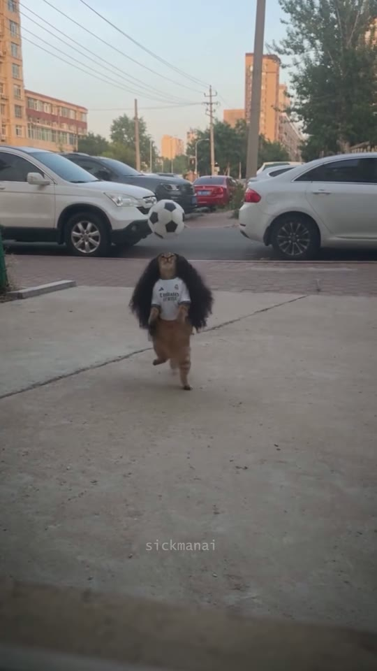
g_01.75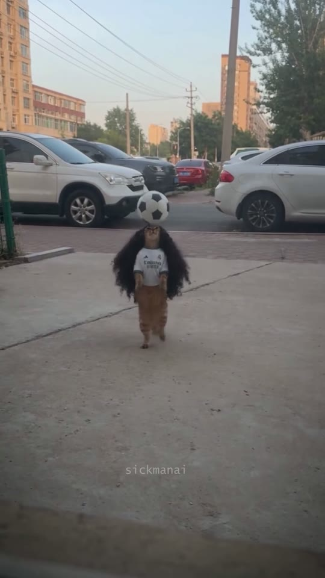
g_03.25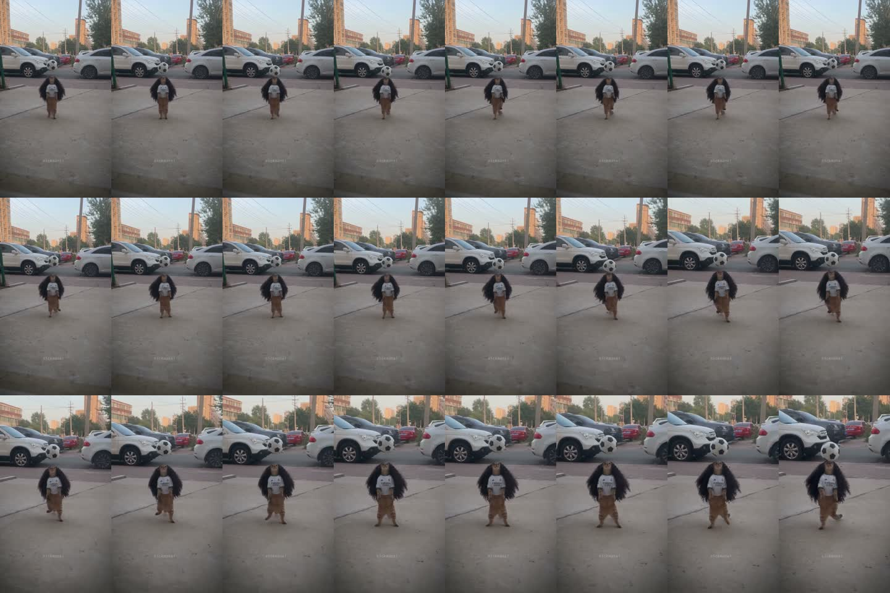
x_f096-119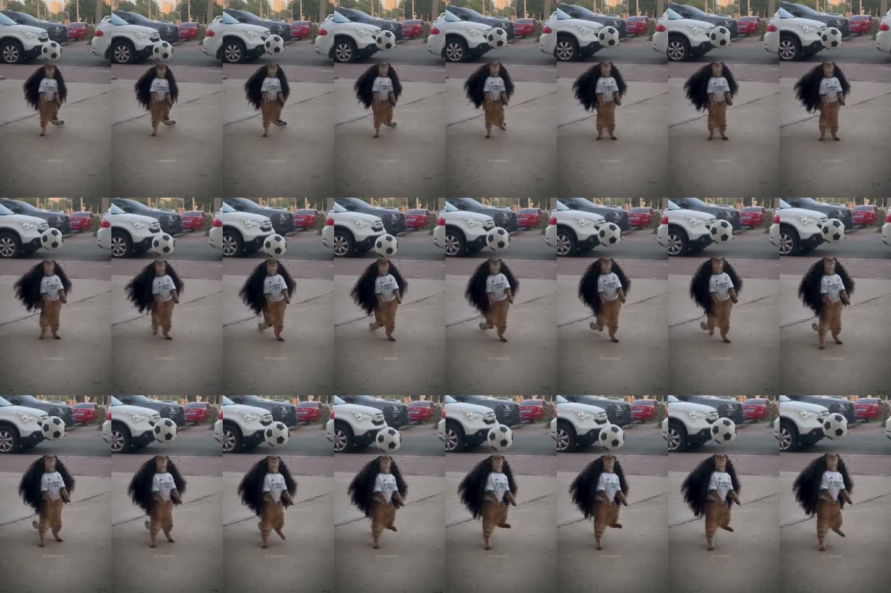
x_f120-143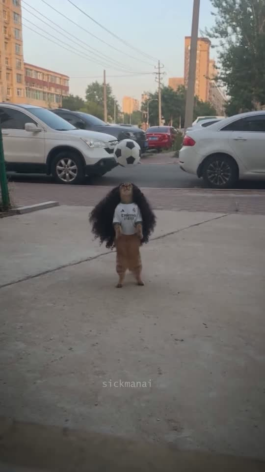
x_3.50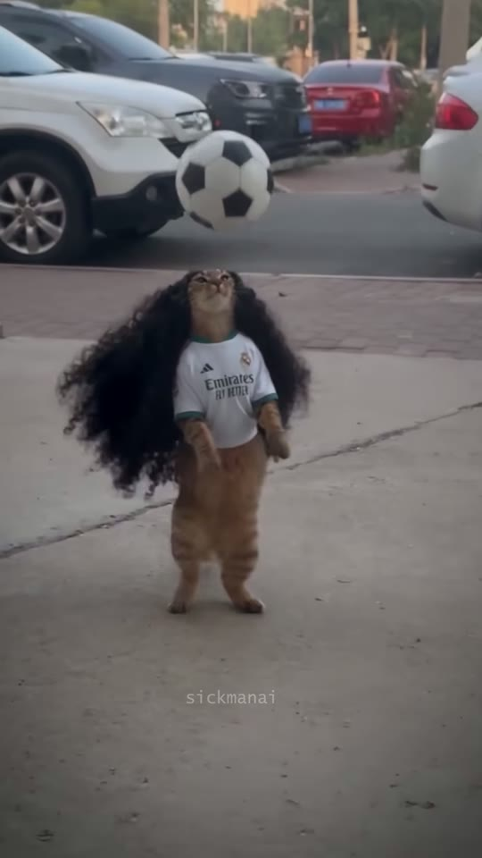
g_04.25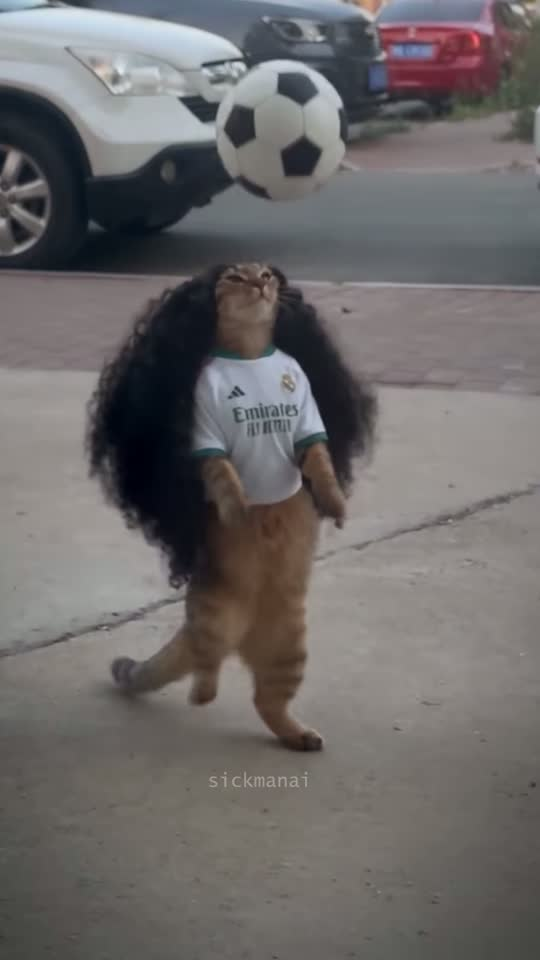
x_5.10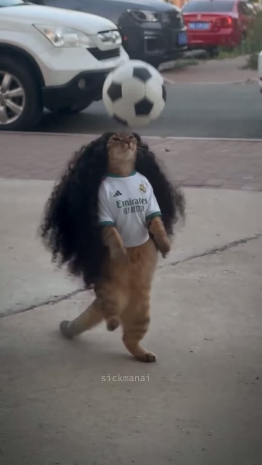
s01_mid_05.02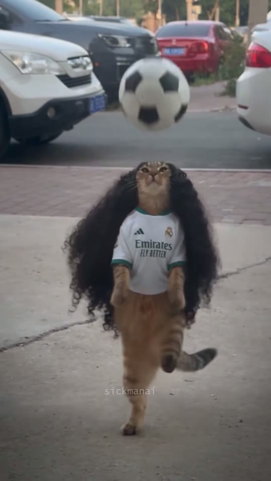
g_07.75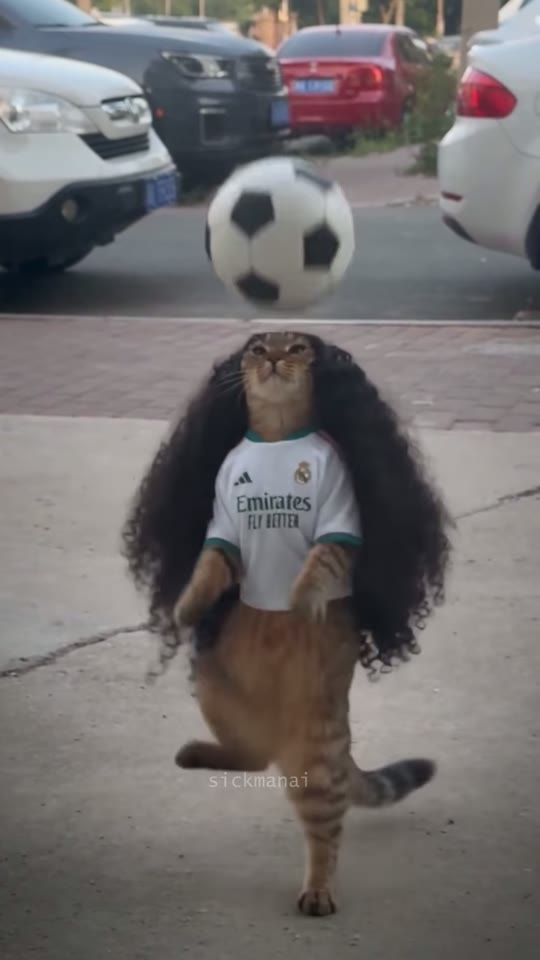
g_08.75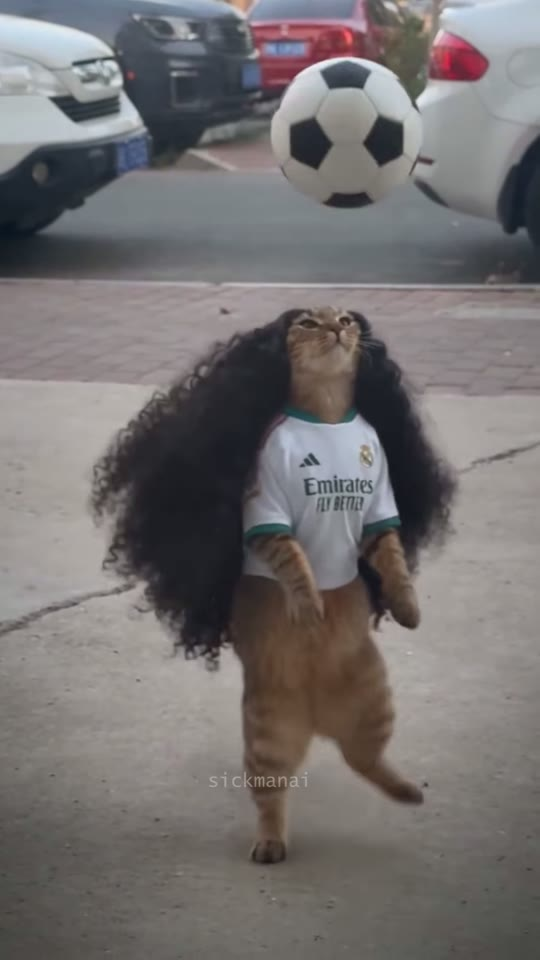
s01_out_09.96| 카메라 움직임 | 원테이크 1컷. ①0.00-3.53s: 폰 핸드헬드 고정(미세 흔들림, 컷 없음). ②3.53-5.10s: 인카메라 스냅 줌인 1.0x→2.43x, 초반 0.27s에 1.5x까지 빠르게 치고(=ease-out quad) 이후 감속. 줌 중심은 화면 x≈46%, y≈48%. 근거: 공 크기 추적 0.42→0.45(3.60s)→0.63(3.80s)→0.84(4.30s)→0.99(4.90s)→1.02(5.10s). ③5.10-10.03s: 거의 고정, 2.43x→약2.55x로 아주 느리게 크리핑 줌. 워터마크는 줌 영향 없음 → 줌은 생성 영상 내부(인카메라)이고 워터마크는 후반 합성. |
|---|---|
| 화면 구성(구도) | [와이드 0.07s] 고양이 얼굴 x53% y36%, 발 y56%, 가발 포함 키 20%(화면 높이 대비), 가발 폭 24%. 공 중심 x54% y30%, 지름 화면폭 10%. 건물 하단/수평선 y≈20%, 연석·보도 경계 y37-41%, 하단 45%는 빈 회색 콘크리트(네거티브 스페이스), 하단 8-12%에 흐린 검은 차창 프레임(전경 가림). 피사체는 3분할 중앙 세로선·위 교차점 사이. [타이트 5.02s] 얼굴 x46% y30%, 발 y77%, 키 49%, 가발 폭 55%, 공 x51% y20% 지름 25%, 보도 경계 y29%. [엔드 9.96s] 얼굴 x55% y34%, 발 y90%, 키 58%, 가발 폭 68%, 공 x64% y14% 지름 26%. 헤드룸은 공이 차지, 배경 차량이 상단 30%. |
| 동물 행동/연기 | 두 발로 선 치즈태비 고양이가 머리로만 공 리프팅(헤딩 트래핑). 헤딩 접촉 27회, 평균 간격 0.367s(≈163회/분 = 음악 80BPM의 2배). 접촉 시각(±0.05s): 0.25, 0.63, 0.97, 1.30, 1.68, 2.10, 2.52, 2.85, 3.30, 3.57, 3.97, 4.33, 4.63, 5.00, 5.35, 5.73, 6.13, 6.53, 6.93, 7.30, 7.68, 8.07, 8.40, 8.73, 9.03, 9.43, 9.80. 와이드 구간은 공이 머리 위 약 1개 지름만 튐, 줌 이후엔 약 1.5개 지름. 고양이는 뒷발로 잔걸음, 가발이 헤딩마다 출렁, 꼬리로 균형. 7.7s·8.7s 부근 한쪽 뒷다리를 들어 균형. 끝(10.03s)에 공이 공중에 뜬 채 종료. |
| 배경 | 중국 주거지 도로(파란 번호판), 흰 SUV·짙은 회색 SUV·빨간 세단·흰 세단 주차, 전봇대·전선, 오렌지톤 아파트, 초저녁 골든아워 하늘. 전경은 넓은 회색 콘크리트 보도. |
| 화면 문구/자막 | 없음 (워터마크 sickmanai만) |
| 다음 컷 전환 | End (no transition, ends mid-action) — 전환 없음. 10.03s(301프레임)에서 공이 공중에 뜬 상태로 뚝 끊겨 자동 반복 재생으로 넘어감. 영상 내부에 숨은 컷 없음(24→30fps 중복 프레임 패턴이 5프레임마다 끊김 없이 이어짐 = 단일 생성본). |
| BGM 상태 | 0.10s부터 바로 시작하는 고음 보컬 챈트/노래(추정), 5.5-5.8s에 프레이즈 쉼(-31dB 딥), 5.9s부터 2절, 끝까지 유지 후 컷아웃. |
Vertical 9:16 smartphone photo, 1080x1920, realistic amateur phone footage look. Hidden bystander phone footage filmed from inside a parked car through the open side window: blurred dark window frame / door sill edge across the bottom 8-12% of the frame. Subject: an adult orange ginger tabby cat (domestic shorthair, chunky build), warm orange coat with darker orange mackerel stripes on legs and belly, cream-white chin and muzzle, pink nose, amber-green eyes, tail orange at the base with dark grey-black rings toward the tip, standing fully upright on its hind legs like a human footballer, front paws held loosely forward at chest height; wearing a HUGE voluminous jet-black curly wig of tight spiral ringlets, center-parted on top of the head, framing the face and falling past the hips, about twice as wide as the cat's body, curls bounce with every movement; wearing a fitted white short-sleeve football jersey that ends at the waist, dark green/teal crew collar and sleeve cuffs, small black three-stripe sportswear logo on the viewer's left chest, small round club crest on the viewer's right chest, two-line black sponsor wordmark across the chest; no shorts, no shoes. The cat stands in the middle of chinese urban residential street at early evening golden hour, about 6 m from the camera, face centered at x=53%, y=36% of the frame, feet at y=56%, whole cat incl. wig only 20% of frame height, wig spans 24% of frame width. Head tilted back looking up at a classic black-and-white pentagon-panel leather soccer ball (size-5 look, slightly scuffed) hovering just above its forehead, ball center at x=54%, y=30%, ball diameter 10% of frame width. Background: Chinese urban residential street at early evening golden hour: a grey concrete forecourt / wide sidewalk in the foreground with a faint diagonal expansion crack, a strip of red-brown brick paving and a low curb behind it, then an asphalt parking lane with parked cars left to right: a white compact SUV (Honda CR-V-like) with blue Chinese plate, a dark grey SUV behind it, a red sedan in the middle distance, a white sedan on the right; beyond: leafy green trees, concrete utility poles with sagging power lines, 6-15 storey orange-beige apartment blocks catching warm sunlight, pale blue-to-peach hazy sky. Horizon / building bases at y=20%, curb line at y=37-41%, lower 45% of frame is empty grey concrete. Camera: handheld phone main lens ~26mm equivalent, eye level ~1.2 m, tilted slightly down, deep focus (everything sharp except the foreground window edge). Light: soft early-evening golden hour, ground in open shade, warm sunlight only on the upper apartment facades, low contrast, slightly desaturated phone colors, mild vignette. Photorealistic, natural, unposed, no text.
Vertical 9:16 smartphone video frame, tight zoomed framing (about 2.5x the wide shot). an adult orange ginger tabby cat (domestic shorthair, chunky build), warm orange coat with darker orange mackerel stripes on legs and belly, cream-white chin and muzzle, pink nose, amber-green eyes, tail orange at the base with dark grey-black rings toward the tip, standing fully upright on its hind legs like a human footballer, front paws held loosely forward at chest height; wearing a HUGE voluminous jet-black curly wig of tight spiral ringlets, center-parted on top of the head, framing the face and falling past the hips, about twice as wide as the cat's body, curls bounce with every movement; wearing a fitted white short-sleeve football jersey that ends at the waist, dark green/teal crew collar and sleeve cuffs, small black three-stripe sportswear logo on the viewer's left chest, small round club crest on the viewer's right chest, two-line black sponsor wordmark across the chest; no shorts, no shoes. Cat centered at x=48%, face at y=33%, feet at y=90%, cat from ears to feet 58% of frame height, wig spans 68% of frame width, head tilted back looking straight up. a classic black-and-white pentagon-panel leather soccer ball (size-5 look, slightly scuffed) in the air above-right of its head at x=64%, y=14%, ball diameter 26% of frame width, slight motion blur. Behind: the brick paving strip and curb at y=29%, the white SUV front on the left, dark SUV and red sedan behind, white sedan rear on the right, all at the top 30% of the frame, mildly soft. Grey concrete ground fills the lower 65%. Soft early-evening shade light, slightly desaturated phone color, mild vignette. Photorealistic, no text.
One continuous 10-second take, no cuts. Handheld smartphone filmed from inside a parked car window. The same upright ginger tabby cat in the huge black curly wig and white football jersey juggles the soccer ball with its HEAD only (keepie-uppie headers): it bobs its head up to tap the ball every ~0.37 s in a steady rhythm, the ball rising only about one ball-diameter above the head between touches, while the cat takes small shuffling steps on its hind legs to stay under the ball, the wig curls bouncing on every header and the ringed tail swinging for balance. 0-3.5 s: camera holds the wide framing with only subtle handheld micro-drift. At 3.5 s the phone operator zooms in: a quick smooth zoom (fast start, easing out) from 1x to about 2.4x, centered slightly left of frame center, finishing at 5.1 s; the dark window edge leaves the bottom of the frame. 5.1-10 s: tight framing, cat from ears to feet fills about 50-58% of frame height, the zoom keeps creeping in very slowly; the cat keeps heading the ball continuously, the ball now bouncing a bit higher (about 1.5 ball-diameters), occasionally lifting one hind leg for balance (around 7.7 s and 8.7 s). The ball must physically contact the forehead on each touch and keep perfect round shape and pentagon pattern. Real-world physics, realistic fur, natural phone video. Keep the cat's identity, the wig, the jersey, the parked cars and the golden-hour light unchanged for the whole clip.
cut, scene change, second cat, extra legs, extra tail, human hands, human body, ball glued to head, ball morphing or changing size, ball passing through head, ball floating without contact, wig changing color or length, jersey text morphing, flickering logos, slow motion, fast forward, heavy camera shake, whip pan, dolly around subject, subtitles, captions, text overlay, cartoon, anime, 3D render, CGI plastic fur, oversaturated colors, HDR halos, fisheye distortion, studio lighting, night, rain
플랜A(권장): image2video, 10s, 9:16, 1080p, 시작프레임=와이드 이미지(nano-banana-pro 생성). 시드 4개 뽑아 ①공이 머리에 실제로 닿는지 ②3.5s 전후에 줌이 들어가는지 ③가발/유니폼 변형 없는지로 선택. 플랜B(줌 미반영 시): 줌 없는 와이드 10s를 생성→pollo 업스케일 4K→ffmpeg 후반 줌(스크립트의 ZOOM_POST=1). 플랜C: first-last frame(시작=와이드, 끝=end_frame_prompt)로 줌을 강제하되 줌 시작이 0s부터 걸리기 쉬움 → 앞 3.5s는 플랜B 와이드와 교체 편집 불권장. 모델 출력은 24fps → 편집에서 fps=30(프레임 복제)로 변환해야 원본과 동일한 5프레임마다 중복 패턴이 됨.
no xfade; hard end at -t 10.033
single clip data-start=0 data-duration=10.033; no transition
Vertical 9:16 smartphone photo, 1080x1920, realistic amateur phone footage. Hidden bystander phone footage filmed from inside a parked car through the open side window: blurred dark window frame / door sill edge across the bottom 8-12% of the frame. Subject: a baby golden (Syrian) hamster, round chubby body, golden-orange back fur, cream-white belly, cheeks and muzzle, big glossy black eyes, small pink rounded ears, pink paws, standing fully upright on its hind legs like a tiny footballer, front paws held forward at chest height; wearing a HUGE voluminous jet-black curly wig of tight spiral ringlets, center-parted, framing its face and falling past its hips, twice as wide as its body; wearing a tiny fitted white short-sleeve football jersey with dark green/teal collar and cuffs, small black logo on the viewer's left chest, small round crest on the right chest, two-line black sponsor wordmark. It stands on the grey concrete forecourt about 1.5 m from a phone held low (~35 cm above ground), face at x=53%, y=36%, feet at y=56%, whole hamster incl. wig 20% of frame height, head tilted back looking up at a miniature black-and-white pentagon-panel soccer ball about the size of the hamster's head (4-5 cm) hovering just above its forehead at x=54%, y=30%, ball diameter 10% of frame width. Background (softer, slightly out of focus because of the lower, closer camera): Chinese urban residential street at early evening golden hour: a grey concrete forecourt / wide sidewalk in the foreground with a faint diagonal expansion crack, a strip of red-brown brick paving and a low curb behind it, then an asphalt parking lane with parked cars left to right: a white compact SUV (Honda CR-V-like) with blue Chinese plate, a dark grey SUV behind it, a red sedan in the middle distance, a white sedan on the right; beyond: leafy green trees, concrete utility poles with sagging power lines, 6-15 storey orange-beige apartment blocks catching warm sunlight, pale blue-to-peach hazy sky. Horizon at y=20%, curb line y=37-41%, lower 45% empty grey concrete. Phone main lens ~26mm equivalent, soft early-evening golden hour, ground in shade, low contrast, slightly desaturated, mild vignette. Photorealistic, no text.
One continuous 10-second take, no cuts. Handheld smartphone filmed from inside a parked car window. The same upright baby golden hamster in the huge black curly wig and tiny white football jersey juggles the miniature soccer ball with its HEAD only (keepie-uppie headers): it bobs its head up to tap the ball every ~0.37 s in a steady rhythm, the ball rising only about one ball-diameter above the head between touches, while the hamster takes small shuffling steps on its hind legs to stay under the ball, the wig curls bouncing on every header and its tiny round body wobbling for balance. 0-3.5 s: camera holds the wide framing with only subtle handheld micro-drift. At 3.5 s the phone operator zooms in: a quick smooth zoom (fast start, easing out) from 1x to about 2.4x, centered slightly left of frame center, finishing at 5.1 s; the dark window edge leaves the bottom of the frame. 5.1-10 s: tight framing, hamster from ears to feet fills about 50-58% of frame height, the zoom keeps creeping in very slowly; the hamster keeps heading the ball continuously, the ball now bouncing a bit higher (about 1.5 ball-diameters), occasionally lifting one hind leg for balance (around 7.7 s and 8.7 s). The ball must physically contact the forehead on each touch and keep perfect round shape and pentagon pattern. Real-world physics, realistic fur, natural phone video. Keep the hamster's identity, the wig, the jersey, the parked cars and the golden-hour light unchanged for the whole clip.
햄스터는 실제 크기로 두고 공을 미니 축구공(머리 크기)으로 축소, 카메라를 낮고 가깝게(지면 35cm, 1.5m) 둬서 화면 내 비율(키 20%→줌 후 49-58%)을 원본과 동일하게 유지. 배경은 원본보다 약간 흐려지는 게 자연스러움. 뒷다리가 짧으니 '잔걸음' 대신 '몸 흔들며 균형'으로 대체. 캡션은 'Cucurellaaa 🐹'로 동일 밈 유지.
| phases |
|
|---|
추정: 모노(L=R 완전 동일), 16kHz 대역제한(6kHz 이상·150Hz 이하 거의 없음) → 다른 영상에서 딴 압축된 '사운드'를 깐 형태. 340-500Hz 고음 유성(音程 있는) 성분이 연속 → 고음/피치업된 보컬 챈트·노래로 추정. 템포 약 80BPM. 캡션상 '쿠쿠렐라' 응원가일 가능성이 있으나 음성 전사 불가로 미확인.
Playful football-stadium style chant, single high-pitched cheerful vocal singing a repeating two-bar name chant 'Cu-cu-rel-la', slightly sped-up pitched-up vocal, sparse light percussion with soft kick on every beat in the second half, 80 BPM (160 BPM double-time feel), major key, no bass, lo-fi phone-speaker mono sound, 10 seconds, starts immediately, short breath pause at 5.5 seconds then repeats the chant.
| 0.25s | soft leather soccer ball header tap · -24 dB 검색어: soccer ball header tap soft, ball bounce head 생성: a single soft muffled tap of a leather soccer ball bouncing off a small animal's head, outdoors, close, dry, 0.2 seconds |
|---|---|
| 0.63s | soft leather soccer ball header tap · -24 dB 검색어: soccer ball header tap soft, ball bounce head 생성: a single soft muffled tap of a leather soccer ball bouncing off a small animal's head, outdoors, close, dry, 0.2 seconds |
| 0.97s | soft leather soccer ball header tap · -24 dB 검색어: soccer ball header tap soft, ball bounce head 생성: a single soft muffled tap of a leather soccer ball bouncing off a small animal's head, outdoors, close, dry, 0.2 seconds |
| 1.3s | soft leather soccer ball header tap · -24 dB 검색어: soccer ball header tap soft, ball bounce head 생성: a single soft muffled tap of a leather soccer ball bouncing off a small animal's head, outdoors, close, dry, 0.2 seconds |
| 1.68s | soft leather soccer ball header tap · -24 dB 검색어: soccer ball header tap soft, ball bounce head 생성: a single soft muffled tap of a leather soccer ball bouncing off a small animal's head, outdoors, close, dry, 0.2 seconds |
| 2.1s | soft leather soccer ball header tap · -24 dB 검색어: soccer ball header tap soft, ball bounce head 생성: a single soft muffled tap of a leather soccer ball bouncing off a small animal's head, outdoors, close, dry, 0.2 seconds |
| 2.52s | soft leather soccer ball header tap · -24 dB 검색어: soccer ball header tap soft, ball bounce head 생성: a single soft muffled tap of a leather soccer ball bouncing off a small animal's head, outdoors, close, dry, 0.2 seconds |
| 2.85s | soft leather soccer ball header tap · -24 dB 검색어: soccer ball header tap soft, ball bounce head 생성: a single soft muffled tap of a leather soccer ball bouncing off a small animal's head, outdoors, close, dry, 0.2 seconds |
| 3.3s | soft leather soccer ball header tap · -24 dB 검색어: soccer ball header tap soft, ball bounce head 생성: a single soft muffled tap of a leather soccer ball bouncing off a small animal's head, outdoors, close, dry, 0.2 seconds |
| 3.57s | soft leather soccer ball header tap · -14 dB 검색어: soccer ball header tap soft, ball bounce head 생성: a single soft muffled tap of a leather soccer ball bouncing off a small animal's head, outdoors, close, dry, 0.2 seconds |
| 3.97s | soft leather soccer ball header tap · -14 dB 검색어: soccer ball header tap soft, ball bounce head 생성: a single soft muffled tap of a leather soccer ball bouncing off a small animal's head, outdoors, close, dry, 0.2 seconds |
| 4.33s | soft leather soccer ball header tap · -14 dB 검색어: soccer ball header tap soft, ball bounce head 생성: a single soft muffled tap of a leather soccer ball bouncing off a small animal's head, outdoors, close, dry, 0.2 seconds |
| 4.63s | soft leather soccer ball header tap · -14 dB 검색어: soccer ball header tap soft, ball bounce head 생성: a single soft muffled tap of a leather soccer ball bouncing off a small animal's head, outdoors, close, dry, 0.2 seconds |
| 5.0s | soft leather soccer ball header tap · -14 dB 검색어: soccer ball header tap soft, ball bounce head 생성: a single soft muffled tap of a leather soccer ball bouncing off a small animal's head, outdoors, close, dry, 0.2 seconds |
| 5.35s | soft leather soccer ball header tap · -14 dB 검색어: soccer ball header tap soft, ball bounce head 생성: a single soft muffled tap of a leather soccer ball bouncing off a small animal's head, outdoors, close, dry, 0.2 seconds |
| 5.73s | soft leather soccer ball header tap · -14 dB 검색어: soccer ball header tap soft, ball bounce head 생성: a single soft muffled tap of a leather soccer ball bouncing off a small animal's head, outdoors, close, dry, 0.2 seconds |
| 6.13s | soft leather soccer ball header tap · -14 dB 검색어: soccer ball header tap soft, ball bounce head 생성: a single soft muffled tap of a leather soccer ball bouncing off a small animal's head, outdoors, close, dry, 0.2 seconds |
| 6.53s | soft leather soccer ball header tap · -14 dB 검색어: soccer ball header tap soft, ball bounce head 생성: a single soft muffled tap of a leather soccer ball bouncing off a small animal's head, outdoors, close, dry, 0.2 seconds |
| 6.93s | soft leather soccer ball header tap · -14 dB 검색어: soccer ball header tap soft, ball bounce head 생성: a single soft muffled tap of a leather soccer ball bouncing off a small animal's head, outdoors, close, dry, 0.2 seconds |
| 7.3s | soft leather soccer ball header tap · -14 dB 검색어: soccer ball header tap soft, ball bounce head 생성: a single soft muffled tap of a leather soccer ball bouncing off a small animal's head, outdoors, close, dry, 0.2 seconds |
| 7.68s | soft leather soccer ball header tap · -14 dB 검색어: soccer ball header tap soft, ball bounce head 생성: a single soft muffled tap of a leather soccer ball bouncing off a small animal's head, outdoors, close, dry, 0.2 seconds |
| 8.07s | soft leather soccer ball header tap · -14 dB 검색어: soccer ball header tap soft, ball bounce head 생성: a single soft muffled tap of a leather soccer ball bouncing off a small animal's head, outdoors, close, dry, 0.2 seconds |
| 8.4s | soft leather soccer ball header tap · -14 dB 검색어: soccer ball header tap soft, ball bounce head 생성: a single soft muffled tap of a leather soccer ball bouncing off a small animal's head, outdoors, close, dry, 0.2 seconds |
| 8.73s | soft leather soccer ball header tap · -14 dB 검색어: soccer ball header tap soft, ball bounce head 생성: a single soft muffled tap of a leather soccer ball bouncing off a small animal's head, outdoors, close, dry, 0.2 seconds |
| 9.03s | soft leather soccer ball header tap · -14 dB 검색어: soccer ball header tap soft, ball bounce head 생성: a single soft muffled tap of a leather soccer ball bouncing off a small animal's head, outdoors, close, dry, 0.2 seconds |
| 9.43s | soft leather soccer ball header tap · -14 dB 검색어: soccer ball header tap soft, ball bounce head 생성: a single soft muffled tap of a leather soccer ball bouncing off a small animal's head, outdoors, close, dry, 0.2 seconds |
| 9.8s | soft leather soccer ball header tap · -14 dB 검색어: soccer ball header tap soft, ball bounce head 생성: a single soft muffled tap of a leather soccer ball bouncing off a small animal's head, outdoors, close, dry, 0.2 seconds |
| 0.1s | distant street ambience (optional, not detected) · -32 dB 검색어: residential street evening ambience distant traffic 생성: quiet Chinese residential street at dusk, distant traffic hum, faint birds, recorded from inside a parked car, 10 seconds |
BGM(챈트) 기준 -14 LUFS 근처, 피크 -12.7dB(원본). 헤딩 톡 효과음은 와이드 구간 -24dB(거의 안 들림), 줌 이후 -14dB. 원본은 모노·16kHz 대역 → 마스터에 lowpass 6.5kHz + highpass 150Hz + 모노 다운믹스로 '폰에서 딴 소리' 질감 재현. 덕킹 없음, 페이드 없음(0.10s 시작, 10.03s 컷).
기본 교체 동물: baby golden hamster · 대안: baby red panda (naturally stands upright, ringed tail matches the original cat's ringed tail), orange fluffy Pomeranian puppy (same orange color palette, easy upright pose)
Character reference turnaround sheet, photorealistic, plain light-grey studio background, soft even light, 4 views in one row (front, 3/4 left, side, back) plus a close-up of the face: a baby golden (Syrian) hamster, round chubby body, golden-orange back fur, cream-white belly, cheeks and muzzle, big glossy black eyes, small pink rounded ears, pink paws, standing fully upright on its hind legs like a tiny footballer, front paws held forward at chest height; wearing a HUGE voluminous jet-black curly wig of tight spiral ringlets, center-parted, framing its face and falling past its hips, twice as wide as its body; wearing a tiny fitted white short-sleeve football jersey with dark green/teal collar and cuffs, small black logo on the viewer's left chest, small round crest on the right chest, two-line black sponsor wordmark. Also show a miniature black-and-white pentagon-panel soccer ball about the size of the hamster's head (4-5 cm) beside it for scale. Consistent proportions in every view, realistic fur, no text labels.
#!/usr/bin/env bash
# v09 rebuild: single 10s gen + (optional) post zoom + 24->30 dup + watermark + bgm + header taps
set -euo pipefail
IN=s01.mp4 # model output (24fps, ideally 1080x1920 or 2160x3840 upscaled)
BGM=bgm.mp3
TAP=tap.wav # one short ball-header tap
WM="yourname" # replace sickmanai watermark with your own handle
FONT="C\\:/Windows/Fonts/consola.ttf"
ZOOM_POST=${ZOOM_POST:-0} # 1 = model did NOT zoom, reproduce zoom in post
DUR=10.033
if [ "$ZOOM_POST" = "1" ]; then
# zoom factor Z(it): 1 until 3.53s, ease-out-quad to 2.43 at 5.10s, then creep to 2.55 at 10.03s (zoom center x46% y48%)
Z="if(lt(it,3.53),1,if(lt(it,5.10),1+1.43*(1-pow(1-(it-3.53)/1.57,2)),2.43+0.12*(it-5.10)/4.93))"
VZ="scale=2160:3840:flags=lanczos,zoompan=z='${Z}':x='(iw-iw/zoom)*0.46':y='(ih-ih/zoom)*0.48':d=1:s=1080x1920:fps=24"
else
VZ="scale=1080:1920:flags=lanczos"
fi
VF="fps=24,${VZ},fps=30,eq=saturation=0.85:contrast=0.97:brightness=0.0,vignette=angle=PI/5:mode=forward,drawtext=fontfile='${FONT}':text='${WM}':fontsize=30:fontcolor=white@0.55:x=(w-tw)/2:y=h*0.81-th/2,format=yuv420p"
# header contact times (s) and gains (dB)
TIMES=(0.25 0.63 0.97 1.30 1.68 2.10 2.52 2.85 3.30 3.57 3.97 4.33 4.63 5.00 5.35 5.73 6.13 6.53 6.93 7.30 7.68 8.07 8.40 8.73 9.03 9.43 9.80)
AF=""; MIX="[bgm]"; i=0
for t in "${TIMES[@]}"; do
ms=$(python -c "print(int(round($t*1000)))")
g=$(python -c "print(-24 if $t<3.53 else -14)")
AF+="[2:a]volume=${g}dB,adelay=${ms}|${ms}[t${i}];"
MIX+="[t${i}]"; i=$((i+1))
done
n=$((i+1))
AF="[1:a]atrim=0:${DUR},adelay=100|100,volume=0dB[bgm];${AF}${MIX}amix=inputs=${n}:normalize=0:duration=first,highpass=f=150,lowpass=f=6500,pan=mono|c0=0.5*c0+0.5*c1,aresample=48000,atrim=0:${DUR}[aout]"
ffmpeg -y -i "$IN" -i "$BGM" -i "$TAP" \
-filter_complex "[0:v]${VF}[vout];${AF}" \
-map "[vout]" -map "[aout]" -t ${DUR} \
-c:v libx264 -crf 17 -preset slow -r 30 -pix_fmt yuv420p \
-c:a aac -b:a 160k -ac 2 -movflags +faststart v09_remake.mp4 < /dev/null
Use the HyperFrames skill to build a 1080x1920, 30fps, 10.033-second vertical composition named 'v09-cucurella-remake'. Timeline: Track 1 video: s01.mp4 (a single 10-second AI generation at 24fps) from 0.000s to 10.033s, object-fit cover, no cuts, no transitions. If the source clip already contains the zoom, do NOT add any transform. If it does not (flag ZOOM_POST=true), wrap the video in a container with transform-origin 46% 48% and animate scale deterministically: 1.00 from 0.00-3.53s, then 1.00->2.43 from 3.53s to 5.10s with ease 'power2.out' (quadratic ease-out: fast first 0.27s reaching ~1.5x), then linear 2.43->2.55 from 5.10s to 10.033s. The watermark must NOT be inside the zoom container. Overlay 1: a radial vignette div (transparent center, rgba(0,0,0,0.22) corners) for the full duration. Overlay 2: watermark text 'yourname' in a monospace font, 30px, white at 55% opacity, horizontally centered, vertical center at 81% of height, full duration, no animation. No captions or on-screen text. Color: CSS filter saturate(0.85) contrast(0.97) on the video. Audio: bgm.mp3 starts at 0.10s at 0 dB and hard-cuts at 10.033s (no fades). Add tap.wav (soft ball header tap) at these seconds: 0.25, 0.63, 0.97, 1.30, 1.68, 2.10, 2.52, 2.85, 3.30, 3.57, 3.97, 4.33, 4.63, 5.00, 5.35, 5.73, 6.13, 6.53, 6.93, 7.30, 7.68, 8.07, 8.40, 8.73, 9.03, 9.43, 9.80; gain -24 dB for cues before 3.53s and -14 dB after. Render to v09_remake.mp4 at 30fps, then run the HyperFrames check/snapshot at 0.25s, 3.53s, 4.30s, 5.10s and 9.96s and compare to the reference frames.
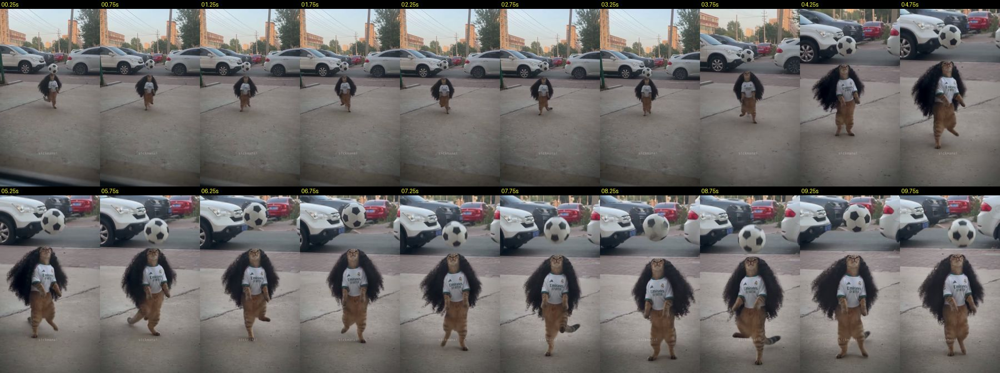